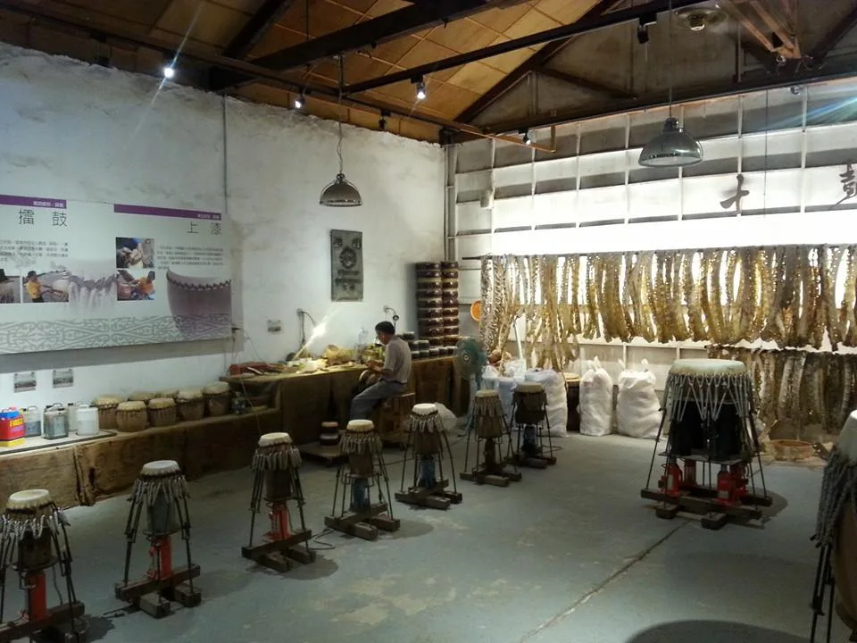

스구(十鼓) 문화촌 입장권과 근처 맛집, 북 공연 보고 어디서 먹을까?
옛 제당공장에서 북 공연을 본 다음, 지도에 등록된 근처 맛집까지 한 번에 챙겨보세요.
게시
스구(十鼓) 문화촌은 타이난 런더구(仁德區)의 옛 제당공장을 북 공연 공간으로 바꾼 곳이에요. 구시가지에서 떨어져 있어서, 둘러본 뒤 어디서 먹을지 미리 정해두면 동선이 편해요. 十鼓文創園區 공식 사이트를 바탕으로 2026년 10월 기준으로 정리했어요.
01 · 스구 문화촌은 어떤 곳일까
1909년 문을 연 車路墘製糖所가 仁德糖廠이 됐다가 2003년 문을 닫았고, 그 자리를 十鼓擊樂團이 북 공연 중심의 문화 공간으로 바꿨어요. 약 7.5헥타르 부지에 일제강점기 창고 22동이 남아 있어요.

02 · 꼭 볼 것
북 공연 입장권 1장으로 북 공연 한 회를 볼 수 있어요. 한 번 더 보려면 NT$300을 더 내야 해요.
옛 제당공장 창고 일제강점기 창고 22동이 남아 있어 공장 분위기 그대로 둘러볼 수 있어요.
魔法工廠 문화촌 안의 볼거리 가운데 하나예요.
익스트림 시설 개별 여행자는 입장하면 익스트림 체험 시설을 무제한 이용할 수 있다고 안내돼요.
03 · 가는 법
台鐵 바오안(保安)역 文賢路에서 文華路로 꺾어 철길을 건너면 걸어서 갈 수 있어요. 保安 환승센터에서 紅3 버스(臺南都會公園 방향)를 타고 十鼓文創園區 정류장에서 내려도 돼요.
04 · 운영 시간과 요금 (2026년 10월 기준)
| 내용 | |
|---|---|
| 운영 시간 | 월~금 10:00~17:20, 토·일 09:30~17:50 |
| 점심 정비 | 11:45~13:10 일부 전시관·체험 시설 청소 |
| 2026 일반 입장권 | 성인 NT$509, 학생 NT$470, 6~12세·65세 이상 NT$450, 3~5세 NT$290 |
05 · 둘러본 뒤 들르기 좋은 근처 맛집
문화촌 바로 앞에는 지도에 등록된 식당이 없어요. 가장 가까운 곳이 약 1.8km, 나머지는 3~4km 거리라 택시나 차로 이동하는 편이 편해요. 아래 거리는 지도에 등록된 좌표로 잰 직선거리라 실제 이동 거리는 더 길 수 있어요.
奇美食品幸福工廠 · 대만식 · 북서쪽 약 1.8km 지도에 대만식(으)로 등록된 곳이에요.
CREMA CAFE · 카페 · 북쪽 약 2.9km 지도에 카페(으)로 등록된 곳이에요.
阿裕牛肉涮涮鍋 · 훠궈 · 동쪽 약 3.1km 지도에 훠궈(으)로 등록된 곳이에요.
麵屋青鳥 · 라멘 · 북쪽 약 3.4km 지도에 라멘(으)로 등록된 곳이에요.
小樣貝果 ／樣貝果 · 베이커리 · 북서쪽 약 3.5km 지도에 베이커리(으)로 등록된 곳이에요.
植男臥室雞蛋燒 · 베이커리 · 북동쪽 약 3.6km 지도에 베이커리(으)로 등록된 곳이에요.
日成咖啡早午餐 · 브런치 · 북서쪽 약 3.7km 지도에 브런치(으)로 등록된 곳이에요.
가게마다 쉬는 날과 영업시간이 다르니 방문 전 구글맵에 등록된 영업시간을 확인하세요.
지도에서 타이난 맛집도 확인해보세요
문화촌 일정 앞뒤로 들를 타이난 맛집을 지도에서 함께 찜해두세요.